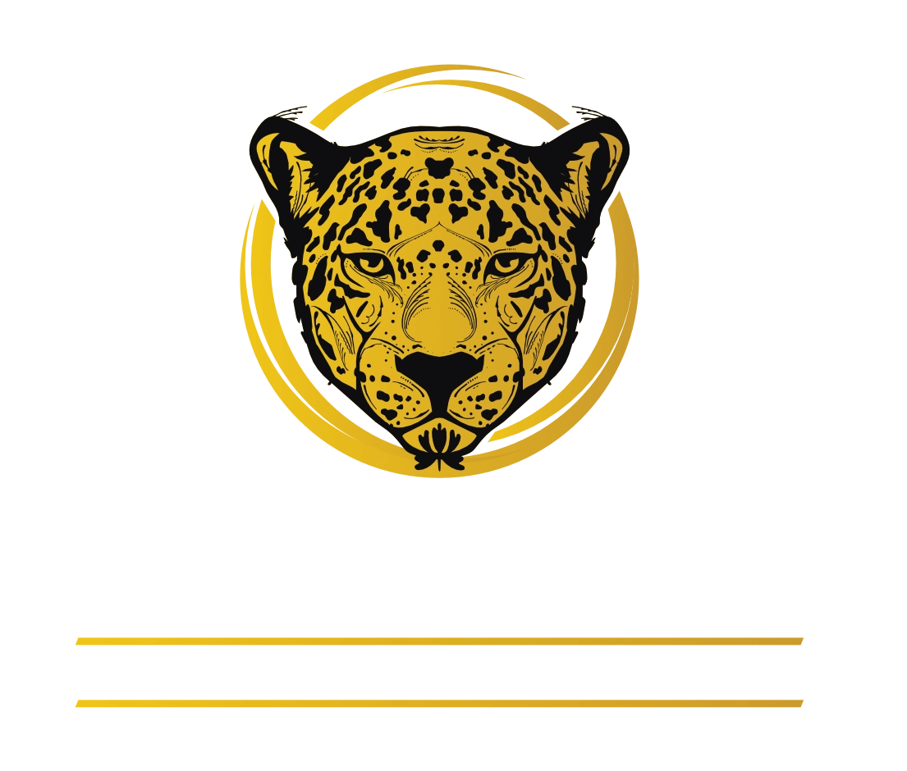

Defesa Criminal Especializada em Casos de Tráfico: Seus Direitos Resguardados!
O Cyrino Advocacia e Consultoria possui experiência e estratégia na defesa de acusados por crimes de tráfico, garantindo um julgamento justo e respeitando seus direitos.
10 anos de experiência, transparência total e atuação estratégica na defesa criminal.
Atendimento humanizado, suporte jurídico especializado e compromisso com cada cliente.